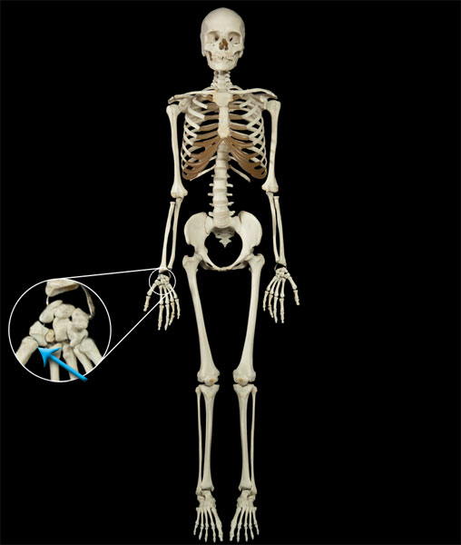

A saddle joint is made up of two bones that have saddle shaped ends. These ends are aligned perpendicular to one another so that they come together to form an X. Saddle joints are classified as biaxial joints. A good example of a saddle joint is the carpometacarpal joint in the thumb.
